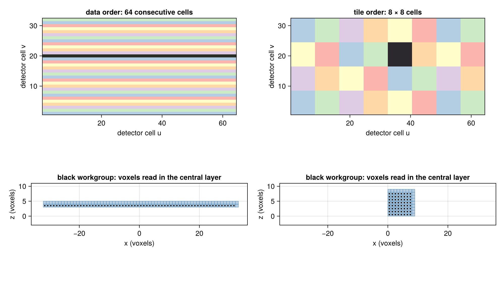

Workgroups and Ray Order on GPUs
The projectors trace one ray per thread (a work-item in the terms of KernelAbstractions.jl). Threads are launched in workgroups, groups of threads that run together on the same part of the device (thread blocks in CUDA; see the terminology of KernelAbstractions.jl). How large the workgroups are, and which thread traces which ray, does not change the result, but it does change the speed on GPUs. These choices are not part of Siddon's Method or Joseph's Method. This page describes what CTOperators.jl does by default and how to change it with a LaunchConfig.
using CTOperatorslaunch_figure (generic function with 1 method)Ray order
Projection data of a detector geometry is stored with the detector cell u varying fastest, then v, then the view. In data order, thread j traces ray j, so a workgroup of 64 threads traces 64 consecutive cells of a detector row. In tile order, the threads of a workgroup trace a square of detector cells instead, for example 8 × 8 cells for 64 threads.
The figure shows both for one view of a cone-beam scan (a 64 × 32 detector, an image of 64³ voxels). Top: the detector cells, colored by the workgroup that traces them (the colors repeat); one workgroup is black. In data order, a workgroup covers a whole detector row here because the detector is 64 cells wide. Bottom: the rays of the black workgroup in the central layer of the image, a slice of voxels perpendicular to the direction the rays mainly run in (Joseph's method steps through such layers). The dots are where the rays cross the layer, the shaded squares the voxels Joseph's method interpolates from. In data order the rays read a long, thin strip of voxels, in tile order a compact patch.

Tiles only apply to detector geometries. The rays of a RayList are always traced in data order, since neighboring entries of a list need not be neighboring rays.
Effect
The forward projection gives identical results in every configuration. The back projection gives the same results up to rounding, because its atomic additions into the image happen in a different order.
The speed depends on the device. In our benchmarks on an AMD Radeon RX 7900 XT with 256³ images, the forward projection became faster with workgroups of 64 threads instead of the size KernelAbstractions.jl chooses, for both methods. Tile order made it faster again for Joseph's method, but changed little for Siddon's. The back projection, whose time goes mostly into the atomic additions, became neither faster nor slower. On the CPU, neither choice made a noticeable difference.
Configuration
Without the keyword launch, a projector uses the defaults of the device it is on:
- on GPUs: workgroups of 64 threads and tiles of 8 × 8 detector cells;
- on the CPU: the workgroup size that KernelAbstractions.jl chooses, and data order.
A projector moved with adapt switches to the defaults of its new device. The GPU defaults were chosen on the GPU above; on other GPUs they are a starting point. Tuning is worth it when projections dominate the run time of your reconstruction.
To choose the settings yourself, pass a LaunchConfig with the keyword launch. It applies to the forward and the back projection, on any device, and projectors made from the projector with subset or adapt keep it:
launch = LaunchConfig(; workgroupsize=128, tile=(16, 8))
op = JosephProjector(image, geometry; storage=CuArray, launch)workgroupsize=nothing lets KernelAbstractions.jl choose the workgroup size; tile=nothing keeps data order. Tile size and workgroup size are independent: the threads take the cells tile by tile, so with workgroupsize equal to the number of cells of a tile each workgroup traces one tile, with a smaller one several workgroups share a tile.
The best settings depend on the device and the problem. To find them, time a few combinations on a problem of the size you need (image, geometry and an image x on the device as in Run on a GPU):
using CUDA
for workgroupsize in (32, 64, 128, 256), tile in (nothing, (8, 4), (8, 8), (16, 4))
op = JosephProjector(image, geometry; storage=CuArray, launch=LaunchConfig(; workgroupsize, tile))
y = op * x # compile
adjoint(op) * y
tf = CUDA.@elapsed op * x
tb = CUDA.@elapsed adjoint(op) * y
println((workgroupsize, tile), ": forward ", round(1000tf; digits=1), " ms, back ",
round(1000tb; digits=1), " ms")
endThis page was generated using Literate.jl.